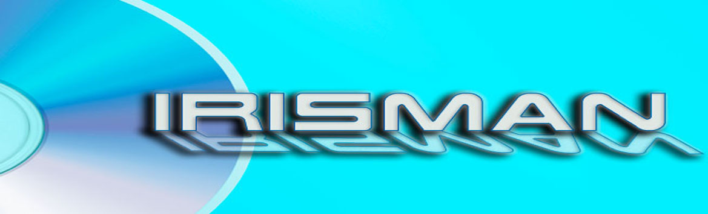
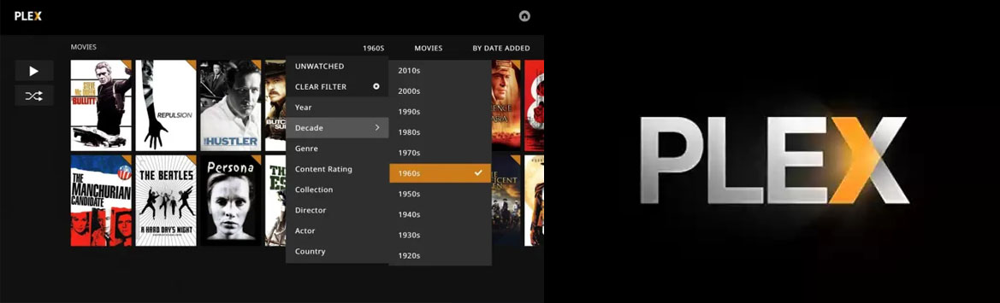
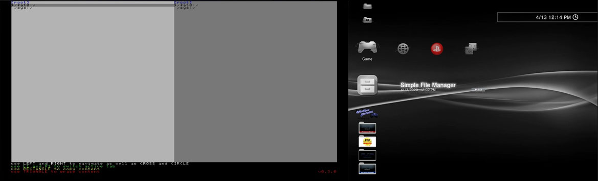
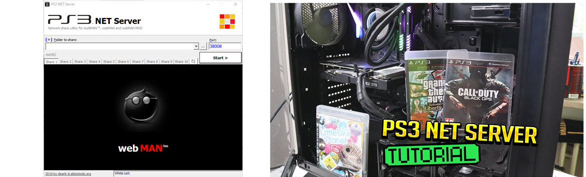
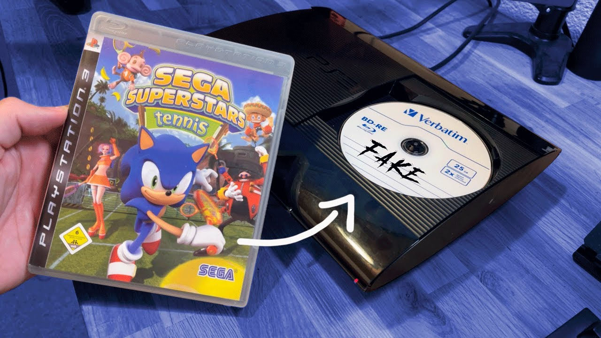
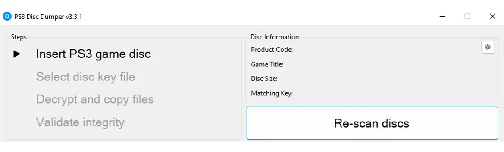

PS3 Backup IDPS-NOR
Copias de seguridad del act-id y memoria flash de nuestra consola esto es personal de cada consola PS3. id es el identificador de nuestra consola y act es la activación de nuestra consola y los dos tipos principales de memoria flash, NOR flash y NAND flash.
PS3 Activar HEN
Activando el HEN en nuestra consola PS3 (4.88-4.89 HFW) podemos instalar Hombrew y emuladores y juegos en nuestras consolas lo más fácil de hacer.

HEN Portable
Podemos instalar nuestro HEN desde sus celulares Android sin la necesidad de un PC o de conexión directa a WEB Oficial .
PS3 Apollo Save Tool
Apollo Save Tool es una aplicación para administrar archivos de partidas guardadas, trofeos y licencias en PlayStation 3.
PS3 Artemis
Artemis, un sistema de trampas para videojuegos de Playstation 3 de código abierto creado bajo la iniciativa Project Artemis. Podemos colocar muchos trucos para nuestros juegos de PS3.

PS3 Audio por USB o Bluetooth
Podemos usar audífonos por USB o por Bluetooth con esta sencilla aplicación en nuestra consola PS3 ya que por defecto no podemos realizar este procedimiento con muestro audífonos.

PS3 FileManager
Este gestor de ficheros nos da la posibilidad de navegar por todos los directorios de la PS3, así como de cualquier memoria externa que tengamos conectada. Podremos copiar y eliminar de la forma más simple imaginable.

PS3 IRISMAN
Gestor de juegos, administrador de archivos y muchas herramientas más componen este manager que lleva muchos años dando soporte en Playstation 3.

PS3 Licencias
Existe el típico pkg de las 15.280 licencias que las instalas y ya deberías de poder licenciar y activar casi todo el contenido sin que salga la bolsita típica de que hay que renovar (comprar)
PS3 Movian
Es una app de ps3 que se instala en CFW/HEN para ver peliculas, series, listas de reproducción y escuchar música, todo Online. Es tan útil que si combinas Movian con las apps de Spotify, Netflix y Crunchyroll te queda todo un centro multimedia completo.

PS3 MultiMAN
Es una aplicación homebrew que funciona como gestor de archivos y cargador de backups (copia de seguridad de juegos de PS3).

PS3 Plex
Una aplicación con la que puedes convertir tu ordenador en un centro multimedia utilizando el contenido digital que tengas en él. Reconoce todos los archivos multimedia que tengas alojados en la carpeta de origen.
PS3 Liberar 8% HDD
Desbloquea hasta un 8% de espacio en el HDD. Es sorprendente, pero real, gracias a 3141card ahora puedes liberar espacio en el HDD con solo instalar un simple pkg.

PS3 webMAN MOD
Es un manager plugin sprx compatible con CEX/DEX y HEN, es el mejor compañero para todos los Custom Firmware COBRA así como con HEN. Si quieres lanzar cómodamente tus juegos desde el XMB.

PS3 Simple File Manager
Administrador de archivos simple para PS3 compatible con sistemas de archivos exFAT y FAT32. Podemos copiar desde nuestro USB o HDD hacia nuestra consola PS3.

PS3 Convertir ISO de PS2 sin PC
Con este método podemos Convertir ISO de PS2 para HEN sin PC en nuestra consola de PS3, Convierte tus juegos de playstation 2 a formato de imagen ISO, donde se te facilitara la manipulación de tu juego, sin la necesidad de programas.
PS3 PSP en PS3
Con estas aplicaciones podemos jugar nuestros juegos de PSP en nuestra consola PS3 más fácil imposible
PS3 RetroArch
RetroArch es una interfaz para emuladores, motores de juegos y reproductores multimedia. Le permite ejecutar juegos clásicos en una amplia gama de computadoras y consolas a través de su elegante interfaz gráfica.
PS3 PKGI
PKGi PS3 es un port para Playstation 3. Esta aplicación nos permite descargar e instalar archivos .pkg directamente en nuestra Playstation 3. Descargas automáticas. Simplemente selecciona un archivo y automáticamente se descargará al disco duro de la consola (direct mode) o se añadirá a la cola de descargas (background mode) utilizando el Download Manager interno.
PS3 VIDEOSTORE
Store gratuito para PlayStation 3 con juegos PSX, PS2, PS3, PSP y DLC. También programas (Homebrew), utilidades y personalización para PS3. Compatible con cualquier consola PS3 ya sea FAT, SLIM o SUPER SLIM con HEN. Para CFW se requiere de un fix exclusivo.
PS3 WebStore Comunidad
Store para descargar juegos de PSX, PS2, PS3, PSP y DLC. También contiene programa (Homebrew), utilidades y personalización para PS3. Esta aplicación ya no tiene soporte solo queda probarla.
PS3 WIKISTORE
Store donde podrás descargar juegos de PSX, PS2, PSP, PS3 PSN y Exclusivos directamente desde tu consola PS3. Tendrás acceso a descargas de Hombrew, emuladores retro y un montón de modificaciones para tu consola.

9420 caratulas para los Juegos PS3
Store donde podrás descargar juegos de PSX, PS2, PSP, PS3 PSN y Exclusivos directamente desde tu consola PS3. Tendrás acceso a descargas de Hombrew, emuladores retro y un montón de modificaciones para tu consola.
Pack Avatares PS3
Avatares instalables en pkg son 4330 archivos para escoger e instalar. El pack bien comprimido en rar lo único que hay que hacer es descomprimirlo y escoger cuales quiere instalar en su consola PS3
Hybrid Firmware Tools
Menú oculto para nuestra consola PS3 con este menú podemos tener acceso a muchas funciona para nuestra consola.
Contendido de un .pkg
PkgView es una herramienta para extracción de archivos pkg de PS3. Es una herramienta 100% legal ya que no contiene código de Sony. Además, PkgView tiene una interfaz gráfica con la que simplifica la extracción tanto de archivos sueltos como del paquete completo.

Make Package Custom
Podemos crear archivos pkg de lo que queramos como por ejemplo temas, juegos, licencias, etc.
PS3 Game Updates
PS3 Game Updates podemos descargar las actualizaciones de nuestros juegos a si no tendremos que esperar a que la consola descargue e instale las actualizaciones .

PS3 NET Server
ps3netsrv es una aplicación de servidor que se utiliza para transmitir contenido desde un servidor remoto a la PS3. Desde un pc hacia nuestra consola PS3 todos los juegos que queramos.
PARAM SFO Editor
PARAM SFO Editor podemos saber más información de nuestros juegos con param.sfo y podemos modificar más información.
RetroXMB
Convertir Juegos ISO de PS2 a PKG en nuestra computadora (PC, Notebook), de forma fácil y sencilla sin más dificultades.
PKG Linker
PKG Linker es una herramienta de Windows para cargar imágenes de juegos y otras aplicaciones en una PS3 habilitada para CFW/HAN. Este método permite a los usuarios sortear la limitación de tamaño de archivo de 4 Gb.
PS3Merge
PS3Merge es una herramienta que permite a los usuarios fusionar archivos divididos por varios administradores de copia de seguridad de PS3.
PSNstuff
PSNstuff Es una herramienta para pc que permite descargar juegos de cada consola playstation (del ps1 a la ps4) actualizar su base de datos y también añadir más juegos en el catalogo.
Remoteplay
Con Remoteplay podemos conectar de forma remota nuestra consola PS3 con nuestro ordenador y esta excelente aplicación.
Desbloquear Trofeos
Desbloquear los trofeos de nuestros juegos en PS3 para poder sacar ese platino difícil de desbloquear. Mucho cuidado podemos estar expuestos a un baneo por parte de Sony(Expulsión y bloqueo de un usuario para nuestra consola).

PS3 ISO TOOLS
PS3 ISO TOOLS podemos crear y convertir juegos a iso de PS3.

PS2 en PS3 con PC
Podemos Convertir ISO de PS2 para HEN con un PC para nuestra consola de PS3, Convierte tus juegos de playstation 2 a formato de imagen ISO, donde se te facilitara la manipulación de tu juego.
Desinstalar HEN en PS3
Desinstalar HEN completamente de nuestra consola para eliminar todo rastro de nuestra consola PS3.
Menú Secreto PS2 dentro PS3
Menú secreto dentro del emulador de PS2 de nuestra consola PS3, para nuevos ajustes de gráficos, FPS, calidad o jugabilidad de nuestros juegos de PS2.

Crear DVD o BD-R Juegos
Podemos crear copias de nuestros juegos en DVD o BD-R para nuestra consola con HEN.

Desencriptar ISO PS3
Podemos desencriptar las ISO descargadas para poder hacerlo correr en nuestra consola PS3.
USB con exFAT - NTFS
Con esta app podemos usar nuestros USB o HDD con el formato exfat o NTFS para nuestros juegos en formato ISO.